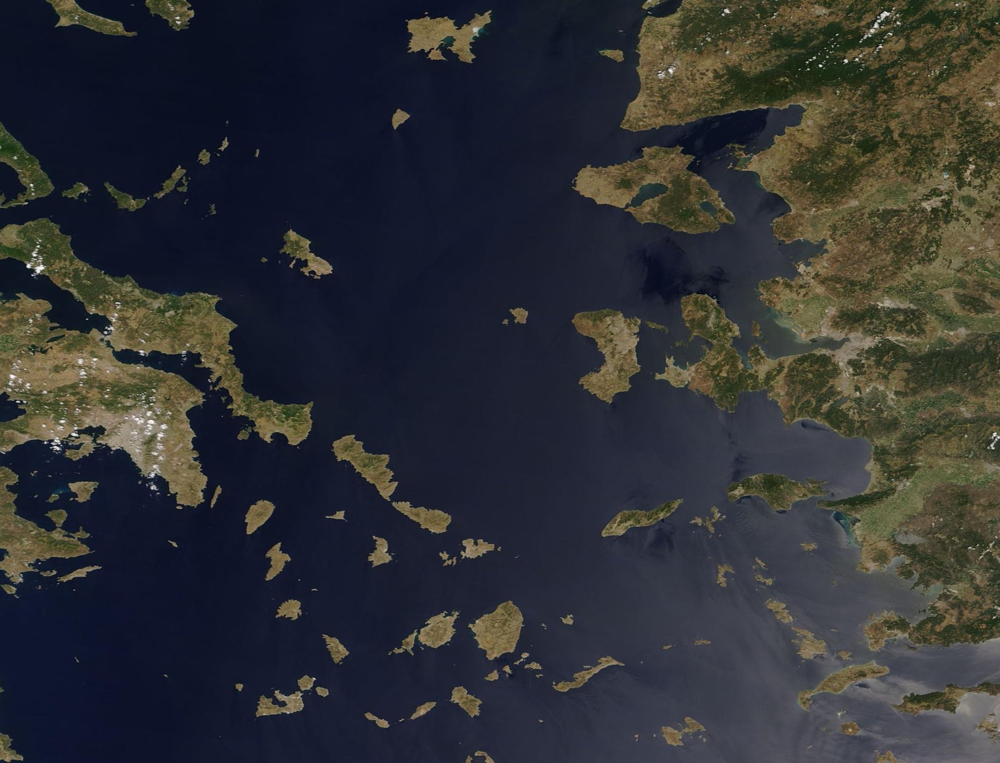

.jpg){kind=link}
Island geography
Evacuation and recovery may depend on ports, ferries, airports, and weather conditions.
GEOL 1200 · Final Project
At the convergence of active tectonics and a warming Mediterranean climate, Greece faces risks that unfold in seconds—and others that build across decades.

Introduction
01 · Exposure
Island geography, coastal settlement, tourism, and aging infrastructure turn physical hazards into complex social risks.
Evacuation and recovery may depend on ports, ferries, airports, and weather conditions.
Communities, infrastructure, tourism, and historic sites are concentrated near the sea.
Fast disasters and slow climate pressures can overlap and amplify one another.
National risk profile
| Hazard | Risk level | Main reason | Most exposed areas |
|---|
02–07 · Hazard profile
Select a topic to jump to the detailed analysis.
08 · Preparedness
09 · Human dimensions
10 · Action priorities
Conclusion
Resilience depends on whether the country can afford, enforce, and maintain long-term mitigation measures across mainland cities, rural areas, and hundreds of inhabited islands.
Sources
Professional, academic, governmental, and international sources only.
{kind=link}